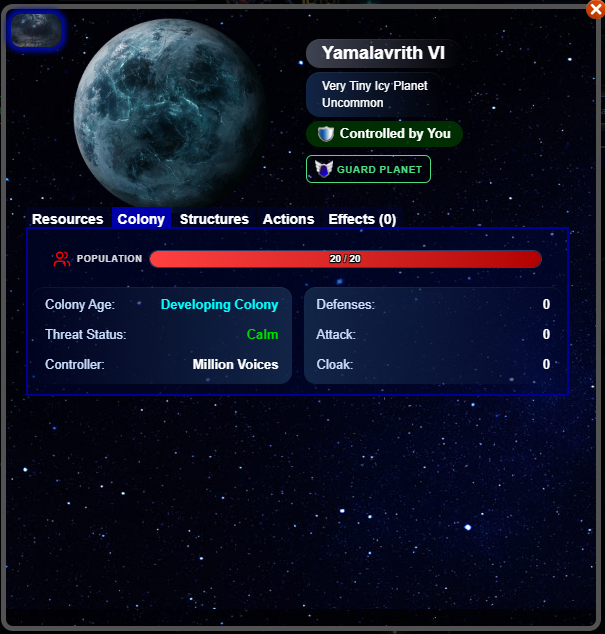
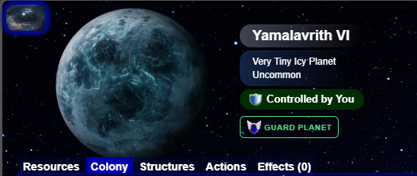
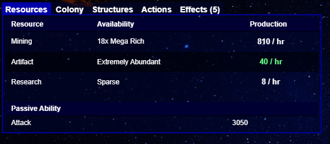
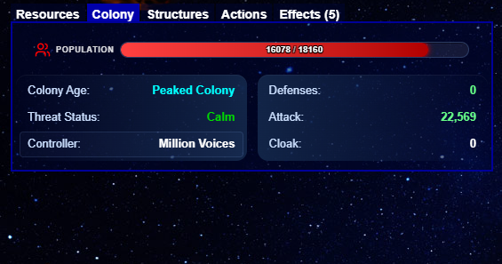
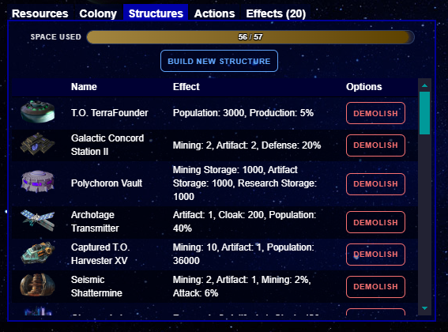
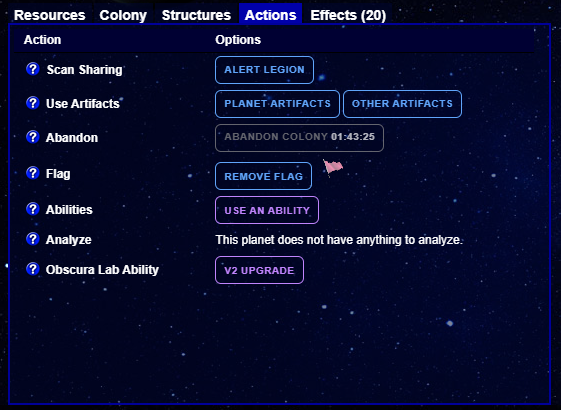
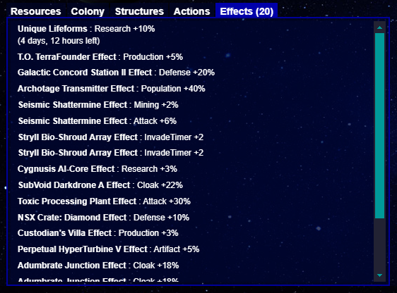

Planet Window
This window displays information about a particular planet. The window changes depending on the owner


This section displays any icons representing planet events and effects, the planet image, the name of the planet, the Size and Type of the planet, the rarity of the type (if applicable), the controller, and an action button
You can click the icons in the upper-left of the window for details on the effects
The action button depends on the owner:
If you or a Legion member own the planet, then this button lets you Guard the planet
If a player in another Legion owns the planet, then this button lets you Attack the planet
If no one owns the planet, then this button lets you Colonize the planet

This tab displays the resources of the planet. You can click each production value to see the base values of the resource and any modifiers
At the bottom of the tab you can see the passive stats for the planet. They can be Attack, Defense, or Cloak

This tab, which does not appear on unoccupied planets, displays the following:
The Population of the planet, which you can click for a detailed pop-up of the base value and modifiers
The age and Development Status of the planet, which you can click for a detailed pop-up
The Threat Status of the planet, which you can click for a detailed pop-up
The Defense, Attack, and Cloak of the planet, each of which you can click for a detailed pop-up

This tab, which does not appear on unoccupied planets, displays the following:
The space on the planet, which you can click for a detailed pop-up
The Build New Structure button, which you can click to see the structure menu (only on planets that you or a Legion member own)
The list of structures on the planet. If you own the planet, then each structure will have a "Demolish" button. This button removes the structure without returning anything required for building the structure
Note: If you have used a Mylarai Build Extractor, then structures that you can extract will return the original artifact to you. Also note that this button sometimes appears on structures that you can't extract; clicking the button in such cases will cause an error message

This tab displays the following:
The Alert button, which makes the planet visible to your Legion
Buttons to use either artifacts that target the planet or artifacts that target yourself
The Abandon button, if you own the planet
The Flag button, which allows you to mark a planet with a flag. Note: due to the Vethin Bomb, it is not recommended to use the black flag, except for the use of the bomb
An abilities button, to access abilities that you can use on the planet
The Analyze button, if Analysis is available on the planet
Any planet-based abilities, which come from structures or effects

This tab displays the various effects on the planet. This does not appear on unoccupied planets